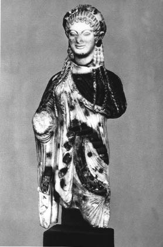

Tragedya kutsanmış ya da tertemiz arı sularla yazılmaz. Kan ve gözyaşı ile yazıldıklarını söylemek ise fazla beylik kaçar.
Tragedya dünyası bir ölçüde düşsel bir dünyadır; Atinalı şairler, bu dünyayı, hem köylü hem denizci bu halkın iki yüzyıl boyunca yaşamış olduğu gerçeklik hakkında edindiği acı deneyimden hareketle yine halk için yaratırlar. Solon’un zamanında Atina halkı önce Eupatrides’lerin, ondan sonra da zenginlerin egemenliğini yaşadı; ikisi de halkın omuzlarında acımasız bir yazgının boyunduruğu kadar ağır bir yük oluşturmuştur: Toprakları ve hakları ellerinden alınan bu halkın, sürgün ya da köle olarak sitenin dışına atılmasına, alçaltan ve öldüren sefalete mahkûm edilmesine ramak kalmıştır.
Sonra V. yüzyılın başında, tragedyanın ikinci kez doğuşu sırasında beslenmek ya da düpedüz yok etmek için yollarda önlerine çıkan tahıl ambarlarını silip süpüren, hayvan sürülerini kırıp geçen, köyleri kasabaları yakıp yıkan, zeytinağaçlarını kökünden kesen ve kutsal yerleri aşağılayan, bir afet gibi çöküp, tanrıların sunaklarını yerle bir eden, heykellerini kıran karma karışık ve sayısız göçebe boylarıyla Medler ve Perslerin istilası geldi.
Atina halkı kararlı bir çabayla, sonra güçlü ve ani bir silkinmeyle zorba Eupatrides’lerden kurtulmuş, Asyalı istilacının hesabını görmüş, kendini ezip geçmek isteyen güçlerden, onca övündüğü demokratik eşitliği ve bağımsızlığını, bu arada aynı darbeyle sitesinin ve ülkesinin özgürlüğünü, ulusal bağımsızlığını sökerek almıştır.
Atina halkının, bileğinin gücüyle –ve tanrıların yardımıyla– taraf tutup kazandığı mücadelenin anısı –ki bunu kendisini gözetleyen ölümün suratına çarparak meydan okumuştur–, bütün Attika (Attihi) tragedyasının orta yerinde birazık karanlık bir yansıma biçiminde bile olsa hep vardır.
Aslında tragedya, Atina halkını, demokrasinin (o dönemde oturtulduğu taban ne kadar dar olursa olsun) ve yurttaş özgürlüğünün savunucuları haline getiren tarihin zorlaması sonucu, bu halkın şiirsel eylemde ona verdiği karşılıktan başka bir şey değildir.
İlk iki büyük tragedya şairi aristokrasiden ya da yüksek burjuvaziden gelmektedirler. Ne önemi var, onlar soylu ya da zengin olmalarından öte, dâhi birer şairdirler; sitenin hizmetinde Atina yurttaşlarıdırlar. Atina topluluğuna dahil olmaları onların öteki insanlarla sıkı bağlarının olduğunu gösterir. Şiirsel eserlerini, tanrılarca yakılan bir ateşli krater gibi onlar arasından bulup çıkarırlar: Sanatları, bu tutuşan kaynağı yola getirmek, bu yabanıl alevi, hemşehrilerinin yaşamlarını verimli kılacak besleyici bir güneşe dönüştürmek amacını güder.
Sophokles (Sofoklis) tiyatroya el attığında –Salamis ve Plataya’dan on yıl kadar sonradır– Medlere karşı zaferden doğan güçlü bir yükselen hareket, ulusu, yeni kazanımlara ve yatırımlara götürmektedir. Tragedya planında, şairin özgün görevi insanların eğitmeni olmaktır. Tragedya genel olarak didaktik bir türdür. Ama hiç de ukalaca bir havası yoktur. Şair mesajını koronun şarkıları, korobaşının konuşmaları ya da kişilerin sözlerinden çok bir olayın temsilen ortaya konulmasıyla verir.
Şairin seyirciye sunduğu dramatik mücadele hemen her zaman büyüklüğe tutkun bir kahramanın mücadelesidir; kahraman –bu büyüklüğe sınır koymuş olan tanrıları incitmemeye dikkat ederek!– doğamız gereği sahibi olduğumuz güçleri daha da genişletmeye, tragedyanın asıl konusu olan şu insanın kahramana yükselişini ve dönüşmesini gerçekleştirmeye çalışır. Tragedya kahramanı ses duvarını aşmak isteyen şu cesur havacıdır. Çoğu zaman o bu yolda, yere çakılır. Düşmüş olması hiç de onu kınayacağımız anlamına gelmez. Şair tarafından insan olarak, kınanmış da değildir. Bize göre ölmüştür o kadar. Onun ölümü alevden ve altından o görünmez duvarı, üstelik daha kesin olarak işaretlememize olanak verir; o noktada tanrıların varlığı, insanın insan ötesine geçme atılımını hemen durdurup önlemiştir. Trajik olan kahramanın ölümü değildir. Hepimiz öleceğiz. Ölümün Sophokles ile onun zamanındaki insanların yaşadıkları gerçeklik içinde, deneyim içinde olması bu ölümde kendini gösteren tanrıların katı varlığı trajiktir. Çünkü bu müdahale insanın kendini aşmasını, kahraman olarak serpilmesini köstekliyor gibi gözükmektedir. Yine de tragedya görülmemiş bir cesaretle insanın kendini aşma, çağının dünyasında ve toplumda karşılaştığı engeller karşısında, bilinmeyen karşısında, büyüklüğünü yeniden sınama özlemini dile getirir ve pekiştirir. Bu engelleri hesaba katarak, kahramanın artık koruyucusu ve klavuzu olacağı kitle halindeki insanların öncüsü olarak, bir kez “açıklık” kazandı mı artık sınırlayıcı niteliği de kalmayan, türümüzün sınırlarını yani kendi kendini aşmak... Bu, yolda yaşamı yitirmeyi göze almak demektir bu. Ama gelip de engele takılan kimsenin nihayet belli olan bu sınırları geriletip geriletmeyeceğini kim bilebilir? Bir başka sefer, başka bir tarihsel toplumda, daha şimdiden seyircinin yüreğinde umuda dönüşen, kahramanın ölümünün aynı biçimde olup olmayacağını kim bilebilir? Hatta yine olur mu olmaz mı, kim bilecek ki?..
Kuşkusuz, ses duvarı aşıldıktan sonra, daha ötede ısı duvarı ya da başka bir şey olacaktır. Ama yavaş yavaş, bu art arda sınamalar sayesinde insanlık koşullarının dar zindanı genişleyecektir. Kapıları açılıncaya kadar... Kahramanın zaferi de ölümü de bunun güvencesidir. Tragedya her zaman, dile getirdiği ve dönüştürdüğü insanların bu hareketli dünyasının süresi ve oluşması ile oynar durur.
Çoğu tragedya korku ve umut arasında kararsız düşüncenin salınımıyla biter. Biter mi? Hiçbir büyük tragedya asla tamamıyla sona ermemiştir. Her tragedya, bitiminde, sonsuza açık kalır. Yeni yıldızlarla benek benek, meteorlar gibi gelip geçen vaatlerle dolu sonsuz bir gökyüzüne açıktır. Varlığı boyunca, trajediye hayat veren baskıların hafifletildiği toplumlarda değişik biçimler altında ele alınan trajedi yeni açılımlar yüklenir; parlak bir güzellikle ışıldayabilir ve görkemiyle bizleri sarabilir. Başyapıtların sürekliliği (söylediğimiz gibi) böyle açıklanır. Böylece tragedyaların vermiş oldukları söz ya da bazen sadece yeni bir toplum hakkında üstü kapalı belirttiği şey, içinde yaşadığımız gelecek tarafından tutulmuş ve gerçekleştirilmiş olabilir.
Tragedyaların kraliçesi olan Antigone (Antigoni), ilkçağdan bu yana elimizde kalan bütün tragedyaların kuşkusuz en çok vaatlerle dolu olanıdır. O, bir zamanların dili ile bize en güncel dersleri veren tregedyadır. Doğru bir değerlendirme yapmanın da çok güç olduğu derslerdir bunlar.
Olaylardan yola çıkalım. Yeni baştan hatırlayalım.
Olayın başlangıcından bir gün önce, Kral Oidipus’un (İdipus) yasal varisleri olan iki kardeş Eteokles (Eteoklis) ve Polyneikes’in, Thebai (Tibe) Savaşı sırasında surların dibinde giriştikleri çatışmada birbirlerini öldürmüş olduklarını öğreniriz.
Eteokles yurdunu savunmakta, Polyneikes ise hakkını ararken yabancılardan yardım almaktaydı. Bu yüzden, o hain biri gibi hareket ediyordu.
Bu kanlı taht, amcaları Kreon’a kalır. O bir kural adamıdır ve önce iyi biriymiş gibi görünür bizlere. Ama, iktidara gelince, kendi kendilerinin bile tepesine çıkmayı düşünen kişiler gibi dar görüşlü biri olur çıkar. Tahta çıkar çıkmaz, Polyneikes’in ayaklanması üzerine sarsılan devlet otoritesini yeniden kurmak, anlaşmazlıkların sarstığı halkını yerleşik düzene saygı göstermeye alıştırmak için yurtsever Eteokles’e cenaze töreni yapılmasını öngören ve bu arada asi Polyneikes’in cesedini ise hayvanların parçalamasına terk eden bir buyruk çıkarır. Kim bu buyruğa aykırı davranırsa ölümle cezalandırılacaktır.
Antigone bu kararı öğrenince, geceleyin düşünür, yitirdiği onurunu Polyneikes’e geri kazandırmaya karar verir. Dindarlık da kardeş sevgisi de bunu gerektirmektedir. Antigone, iki bahtsız kardeşi arasında ayrım gözetmez. Ölüm onları yeni ve daha tartışmasız bir kardeşlikle donatmıştır. Kreon’un yasağına karşın o, Polyneikes’i gömecektir. Ama, eyleminin sonunda kendini ölümün beklediğinin bilincindedir. “Bu büyük suçtan sonra” böylesi bir ölüm ona “güzel” gözükecektir.
İnancının coşkusuyla, soylu girişimine kız kardeşi İsmene’yi (İsmeni) de katmaya çalışır. Çılgınlık, diye karşılık verir İsmene. İktidara boyun eğmek için yaratılmış basit kadınlarız biz. İsmene, kız kardeşini, tehlikeli tasarısından vazgeçirmeye çalışır. Antigone’nin karşılaştığı engel, aldığı kararda onu daha bir direngen kılar. Demek oluyor ki, Sophokles’de, kişiler giriştikleri ya da reddettikleri eylemler konusunda kararlarını açıklayarak birbirlerini tanır, seyirciye de kendilerini tanıtırlar. Antigone de İsmene’yi reddeder ve onu küçümser. Cenaze törenlerini yaptığı sırada, kralın, Polyneikes’in cesedi yakınında beklemek için başkalarıyla birlikte yerleştirdiği bir asker tarafından tutuklanan genç kız, elleri bağlı olarak Kreon’un huzuruna çıkarılır. Antigone yaptığı işi haklı gösterir. O, sağduyudan yoksun bir prensin kararından üstün olması gereken tanrısal yasalara, vicdanında beliren evrensel yasalara, “yazılı olmayan yasalar”a uymuştur.
Antigone’nin direnişi Kreon’un, kentin ünlü kişilerinin şaşırmış korosu önünde, seve seve takındığını gördüğümüz her şeyi sitenin iyiliği için yapıyormuş gibi gözüken görkemli devlet başkanı maskesini düşürür. Genç kız kurumlanan kralı keyfilikte hep daha ileri gitmeye zorlar. Kral Antigone’yi ölüme mahkûm eder, ve hatta anlamsız bir biçimde sarayda şaşkın şaşkın dolaşıp durduğu görülen İsmene’yi de. Öte yandan zaten İsmene, kız kardeşi ile birlikte ölmek istemektedir. Ölümünü paylaşmasına izin vermesi için ayaklarına kapanıp Antigone’ye yalvarır. Antigone bu geç kalmış özveriyi sert bir biçimde geri çevirir, İsmene’ye hiç hakkı olmayan bu onuru vermez. O zaten kız kardeşinden kendisi ile ya da kendisi için ölmesini hiç istememiş, sadece onunla birlikte sevgili kardeşlerini gömmek için ölümü göze almasını istemiştir. İki yiğit kız kardeş biri ötekini özünde neredeyse tanıyamamaktadır. Ancak aralıksız, bitap düşüren bir karşı tavırla yüzleşirler.
Bitap düşüren ama verimli. Antigone ve İsmene’li sahneler, Sophokles’de yalnızca karakterlerin, benzerliklerin çatışmasından nasıl yaratıldıklarını gösterdikleri için değil, aynı zamanda sevginin bulaşıcı erdemini parlak bir biçimde belirttikleri için de önemlidirler.
Ama şimdiden ölümcül sonuna yönelmiş gibi görünen tragedyanın en karanlık orta yerinde, işte, bize ansızın bir an için soluk ve umut veren şaşırtıcı bir düğümün –Yunan tiyatrosunda ilktir– açıldığını görürüz. Bu olay aynı zamanda sonu Kreon’u cezalandıracak bir çözüme varacak darbeyi hazırlar. Daha başka pek çok şeyi: Antigone ile Kreon’un uzlaşmasını hazırlar...
Haimon (Hemon), babası olan kralın huzuruna çıkar ve genç kızın bağışlanmasını ister.
Haimon Antigone’yi sevmektedir. İki genç nişanlıdırlar. Aşk bir kez daha bulaşma gücünü gösterir. Ama Haimon’un gelip Antigone’nin yaşamını istemesinin, onun aşkı adına olmayışı son derece çarpıcıdır. Haimon soylu bir biçimde, duygunun dili ile değil, bir insana uygun tek dil olan adalete tutkun aklın dili ile konuşur. Babasına en ağırbaşlı ve en saygılı üslupla seslenir. Sevdiği ve yolunu şaşırmış gördüğü bu babaya, tanrısal saygıyı göstermesini hatırlatır, aynı zamanda onu, yönettiği sitenin çıkarından ayrılmayan, kendi gerçek çıkarı konusunda aydınlatmaya çalışır. Amacı hiçbir biçimde onu yumuşatmak değil, sadece inandırmaktır. Haimon nişanlısının yaşamını savunmayı ve hele hele kendi davasını savunmayı yüz kızartıcı buluyordu: O ancak babasının ve adaletin yanındadır. Haimon’a hiçbir şey bir oğul olmaktan daha çok yakışmaz. Sahnenin olağanüstü bir şıklığı vardır. Aşk duygusunu yaymaya, onu sözlerle uzatmaya o kadar hevesli günümüz tiyatrosu, duygulandırma yönünde bu durumu sömürmekten geri kalmazken antik şair bu ucuz duygu eğilimine boyun eğmekten kaçınır, babasıyla konuşan Haimon’un ağzına aşkı ile ilgili en ufak bir dokundurma koyma hakkından kendini yoksun bırakır. Haimon’un Antigone’ye olan duyguları nedeniyle başkasını yanlış yönlendirme iddiasında olmasından değil. Ama o, bu duyguyu toplumun çıkarından üstün tutmayı babasından istemeye cesaret etseydi, nasıl bir insan olurdu acaba? Onur ona tutkusunu bastırmayı, yalnızca sağduyu konusunda konuşmayı buyurmaktadır.
Öte yandan, Haimon’un yüreğine kabul ettirdiği bu bastırma sakin bir havada başlayan bir tartışma sahnesinin çılgınca gelişen bir şiddet halinde yayılmasına olanak verir. Babasının onu, sıkı sıkıya koruduğu bu onurun gereğini yapmamakla suçladığı andan itibaren Haimon bunca haksızlığa karşı nasıl isyan etmesin ve kızgınlığını boşuna gemlediği tutkusuyla nasıl beslemesin ki? Sahnenin son repliklerinde, Haimon’un patlaması, demek ki hem aşkı hem de onur duygusunu gösterir bize. Kreon’un öfkesi ise bize bu adamın artık yalnızca haksızlıkta ne kadar inatçı olduğunu söylemez, bir babanın oğluna karşı bağlılığını da anlatır. Kreon’un duyabileceği türden bir bağlılık, bir baba sevgisi, oğulun babaya bir eşya gibi bağlı kalmasını ister; otoritesine bu ani karşı çıkışıyla oğlunun bir yabancının sevgisiyle dolu olduğunu anladığı için onu daha hoşgörüsüz kılar. Kreon’un oğluna karşı büyük öfkesi, onu yalnızca yolunu şaşırmış biri gibi göstermekle kalmaz, tanrıların oğula vurmaya hazırlandıkları darbeye karşı da savunmasız gösterir. Nişan alınacak güzel bir hedef, bir yürek kalmıştır elinde kala kala...
Bununla birlikte iki insanın atışması, sonunda ancak Kreon’un kararını güçlendirmiştir. Antigone’nin kaybettiğini bir kez daha anlarız: Kreon onun mahkûmiyetini onaylar –İsmene’nin mahkûmiyetinden vazgeçer– ve ölüm cezasına şu en acımasız işkenceyi ekler: Antigone diri diri bir mağaraya gömülecektir.
Muhafızları tarafından götürülen Antigone.
V. yüzyılın ikinci yarısından vazo.
Ama Antigone’nin bu ölümü bize her zamankinden daha kesin görüldüğü anda etkisini daha açık bir biçimde sezdirmeye başlar. Daha dramanın açılışında Antigone önümüze bir ışık –insani varlığın tamamen karanlığa yargılı olmadığının bir güvencesi– olarak konulmuştu. Haimon sahnesinden önce, Antigone’nin bu ışığının acımasız bir sitenin çıplak alanında boşuna yanmış olacağı konusunda bize, ne koro ihtiyarlarının çekingen onaması, ne de İsmene’nin özverisinin alazlanması bir güvence vermiştir. Bu ışığı söndürmek için Kreon gibi birinin iradesi yeterliyse insan yaşamı zaten hoyratlığın karanlığına teslim olmuş demektir! Drama içimizde bu karanlık kutba doğru mu ilerlemektedir? En azından Haimon sahnesine kadar, evet. Bu yeni anlatışa kadar Antigone’nin ölümü ancak kısır bir anlam taşır gibidir. Bize bir sevinç vaat edilecek, sonra vazgeçilecektir. Antigone’nin ölü ya da diri, sonsuza dek bize verilmesi için onun alevinin başka yangınları tutuşturması gerekir. Güzelliklerine karşın, ihtiyarların şarkıları, İsmene’nin narin ışıması bizi güçlükle umutsuzluktan korumuştur. Yalnız Haimon’un yakıcı ocağı Antigone’yi bize geri vermeye başlar. Haimon, bir tek aşk sözcüğü kullanmaksızın, hem sevdiği kadına hem de adalete ve tanrılara bağlılığı ile aşkın bulaşıcılığını, dünyayı ve yaşamlarımızı yöneten bu gücün, Eros’un karşı konulmaz erkini parlak bir biçimde gösterir...
Koro Eros’un gücünü bilir. Haimon’da onun varlığını okumuştur. Koronun bizimle birlikte yol aldığı bu yarı-aydınlıkta (seher mi yoksa akşam karanlığı mı bunu henüz bilmiyoruz), onun “Yenilmez Eros”u öven şarkıları el yordamıyla coşku veren gerçeklere doğru ilerler...
Şimdi Antigone son bir kez, önümüze çıkar. Korumalar onu, ölümünün –kör karanlık ve kayalar içinde ölümünün– gerçekleşeceği yere doğru götürürler. Bu sahnede onun hepimize adanmış son mücadelesini görürüz. Onu, gurur zırhını soyunmuş, gerektiği gibi yalnız ve çıplak, kaderin tutsaklarını sıraladığı duvara dayanmış durumda görürüz.
Antigone’nin bu yanıp yakınmalı sahnesi, yaşamdan ayrılmanın acısını, hem de anlayacak durumda olmadıkları şu anda değerlendirmeye daha hevesli ihtiyarların huzurunda, kahramanın ezgilediği bu güzel kıtalar son ve zorunlu yalnızlığın acısını saptar ve söyler –bu sahne Yunan tragedyasının geleneksel temalarından birini yeniden ele alır. Ölmeden önce kahramanın canlılar dünyasına veda etmesi, değerli gün ışığı sevgisini bir ezgiyle dile getirmesi doğrudur, gereklidir. Onun, gücü ve güçsüzlüğü içinde, kendisini ezen kaderin mutlak gücü ile teke tek boy ölçüşmesi de gerekmektedir.
Bazı eleştirmenler bu yakınmalı ezgiler sahnesinin Antigone’nin kibirli karakterine uymadığını belirtmişlerdir. Doğru olan tersidir. Onun üzerine düşen ölümün çiğ ışığı bize en sonunda Antigone’nin ta derindeki özünü gösterir. Burada bize bu varlığın anahtarı verilmiştir. Artık katı Antigone’nin –kavgada katı, kendi kendisine karşı katı, güçlü bir savaşçılar soyundan gelen bir kız olduğu için doğuştan katı, sert Antigone’nin kendi sırrı, kendi yalnızlığı içinde baştan başa sevgi dolu biri olduğunu anlarız. O, güneşin verdiği hazzı seviyordu, ırmakları ve ağaçları seviyordu. Yakınlarını seviyordu. Ana-babasını, hiçbir zaman sahip olamayacağı çocukları. Yeri doldurulmaz kardeşini. Zaten, sevgi dolu olmasaydı, bu kardeş için nasıl canını verebilirdi?
Sophokles’in sanatı tragedya seyirliğinin alışılmış bir temasından hareketle Antigone’de ortaya çıkan şu gerçekliği ünlendirmiştir: Hiçbir insani varlık ölme gücünü yaşama karşı gösterdiği sevgiden başka yerde bulamaz...
Ölüme gittiği bu anda genç kızın yaşamını kurtaracak artık hiçbir şey olamaz. Tanrılardan başka hiçbir şey.
İnsanlar, birbirine karşıt tutkularının çarpışması yüzünden Antigone’nin ilk zanaatçısı olduğu bir yazgı çarkı, bir kader inşa ettiler. İstenerek çizilen bir kader içinde kadın kahramanın özgürlüğü yazgı olarak kendini gösterir. İnsan olarak, hazırlanan bu kader yüzünden, Antigone yitip gitmiştir.
Ama şimdiye kadar sessiz kalan ve birden konuşan tanrıların sesini Teiresias (Tiresias) duyurur seyirciye.
Onların sessizliği tragedyanın sınırında duyulur –bu sessizlik insanların kavgasını ve çığlıklarını bir kuyunun dibine kapatmış gibidir– bu sessizlik birden yankılanır ve konuşur. Açık açık düşüncesini söyler. Yeniden insan çığlıklarına kapanmadan önce, insanın sağduyusunun hâlâ işleyebileceği tek yolu aralar ve gösterir. Tanrısal ses çınlamalı ve belirgin bir sestir. Ama bu konuşmanın saydamlığı daha şimdiden yıldırımı içinde barındıran durgun görünüşlü bir göğün soluk aydınlığı gibidir. Biliriz ki Kreon hem duyabilir hem duyamaz, Antigone’yi bağışlama buyruğunu hem verebilir, hem veremez, daha doğrusu o hâlâ duyabiliyorsa, kurtarmak için zaten vakit çok geçtir. Tragedya çatışmasının sonunda genellikle olduğu gibi, insan ve kader, koşunun son yüz metrelerinde, gergin irade, bağlı kaslarla, hız yarışına girerler. Teiresias sahnesini kapatan iki koro ezgisi birbirine koşut bir sızlanma sütunu ile bir umut fişeğini yukarılara fırlatır; bunun çelişkisi dramanın patlamasından önceki bu yüce son dakikada tam olarak varlığımızın paramparça oluşunu anlatır.
Birden o dakika gelip geçmiştir: İnsan gelip “çok geç” noktasına dayanmıştır. Felaket azgın dalgalar halinde yayılmaktadır. Adı belirsiz haberci, bize Antigone’nin öldüğünü söyler, onun güzel boynunu boğan başörtüsünü ve çıkagelen babanın yüzüne tüküren oğulu anlatır; Haimon’un Kreon’a kalkan kılıcının kendisine döndüğünü ve kendini asmış kızın yüzüne serpilen kendi yüreğinin kanını anlatır. Bu yalnız felaket değil üstümüze çullanan ve bizi boğan dehşettir. Yunan tragedyası dehşetin yaşamın özel yanlarından biri olduğunun bilincindedir: Oyunu kesin biçimde bununla destekler.
Kreon şimdi oğlunun vücudunu kollarında taşıyarak, yerde sürükleyerek döner. Acısını haykırmaktadır, bağıra çağıra cinayeti anlatır. Arkasında bir kapı açılır: Bir başka ceset adını ünler, bir başka cinayet sırtına gözlerini diker. Karısı, Haimon’un anası Eurydike (Evridiki) onun hatası yüzünden kendini öldürmüştür. Kreon, kendisini suçlayan ve cezalandıran iki vücut arasında artık ancak acınacak bir yaratık, yanılmış olan ve hıçkıra hıçkıra ağlayan bir insandır, sevdiği ve öldürdüğü kimselerin varlıklarının yerini almış olan ölüme yalvarır. Ne olur, o kendisini de alsın diye! Ölüm cevap vermez.
Gözlerimizin önündeki dünyanın artık ancak kan ve gözyaşına kesildiği bu anda, şairin içimizde yaşattığı insan figürleri çemberinin artık yalnızca bir şaşkın hayaletler çemberi olduğu bu anda –mağarada başörtüsü ile asılmış Antigone’yi unutmadığımız bir anda– bu üst üste yığılı dehşet anında içimizi tuhaf bir sevinç doldurur. Antigone içimizde diri ve sevinç içindedir. Antigone apaçık ve yakıcı gerçektir.
Bu arada, Kreon bir başka kardeş ışık gibi, yüreğimizde alevlenmeye başlar. Kreon tanrılar tarafından yıkılmıştır, ama onu cezalandırmak, ona vurmak bize yasaklanmıştır. Haimon’un, bizimle diz çökmüş baba arasında uzanan vücudu, bir sevgi ve acıma gölü gibi, Kreon’u darbelerimizden korur.
Ve artık anlamak gerekir. Bu gereklilik bir aydın takıntısı değildir. Yüreğimize kadar; aklımızın derinliklerine kadar altüst olan duyarlığımız bizi, tragedyanın anlamını bulma çabasını göstermeye zorlamaktadır. Şair, Antigone ile Kreon’un bize yönelttiği soruya cevap vermemizi istemektedir.
Antigone bir değerler sorunu ortaya koyduğundan, eleştirmenlerde bu değeri sadece tezli bir oyuna indirgeme ve kişileri ancak temsil ettikleri bu değerlerin cebirsel işaretleri olarak düşünme eğilimi büyüktür. Hiçbir şey, Antigone hakkındaki yargımızı, burada bir ilkeler çatışması görmekten daha fazla sakatlamaz. Zaten hiçbir şey şairin yaratıcı tutumuna, onun yaratımının soyuttan somuta gidebilmesi düşüncesinden daha ters değildir. Antigone bir ilkeler yarışması değil, bir varlıklar, hem de adamakıllı değişik ve belirgin insani varlıklar arası çatışma, bir bireyler arası çatışmadır. Dramanın kişileri önümüzde katı cisimler gibidirler. Onun düşünceler planında izdüşümünü kurmamıza izin veren de –ama iş işten geçtikten sonra– yine bu katılık (geometrik anlamda), maddelerin bu yoğunluğudur.
Öyleyse, Sophokles’in yapıtının anlamını kavramaya çalışmak için bu kişilerden ve onların yaralayıcı ama inandırıcı varlıklarından yola çıkarak terazimizin kefesine bu yapıtın bize verdiği hazzın niteliğini koymayı unutmamak gerekir.
Öte yandan, dramın anlamını, ne kadar önemli olursa olsun, hiçbir soyut kişilikten beklemeyelim. Bir büyük şair, hiçbir zaman, ayrıcalıklı bir kişilikte kendi kopyasını çıkarmaz. Bizi yarattığı kişilere bağlayan, onları bize benimseten, önce yabancı ve aykırı gibi gelen, ama sonunda ancak tek bir sesi, bizim de sesimiz olan sesle konuşan bu canların dilini anlamak için bize çevirmenlik eden bunların her birinde şairin bizatihi kendi varlığıdır. Tüm şairler arasında, yalnızca tragedya şairi kendi içinde ve bizim içimizde dövüşen ve hep birlikte o ve biz olduğumuz için sevdiğimiz şu düşman çocukların birlikte söylemleri ile ancak bizlere kendini duyurabilir. Konser uyuma varmadan önce uzun süre yaygara içinde çırpınır. Acıyla, zevkle, ağır ağır gelişerek tenimiz ve kanımızla aklımıza ulaşmadan önce, duyarlığımız içinde yerini alır.
Antigone ile Kreon kıyasıya dövüşürler. Kavgaları neden bu kadar şiddetlidir? Çünkü hem bu kadar farklı, hem de bu kadar benzer iki varlık kuşkusuz hiç görülmemiştir. Benzer karakterler, ama, ters ruhlar. Bükülmez iradeler: Şu kaçınılmaz sertleşme ile dağlanmış, başarı tutkunu tüm ruhlara gereken hoşgörüsüzlüğü kendine silah yapan şu bükülmez iradeler.
Antigone’den söz eden koro “bükülmez karakter der, tam da bükülmez bir babanın kızı.”
Antigone “uzlaşılmaz” lakaplıdır, Oidipus oyduğu gözlerine varıncaya kadar kendi kendisine karşı bunca sert olduğu gibi, Antigone de kendini asacak kadar acımasız ve “taşkın”dır –başkasına karşı ikisi de serttirler.
Ama Oidipus’un kızı, Kreon’un da yeğenidir o. İkisinin de yer tutmak istediği büyüklük yükseltisinde, insanın benzer biçimde seyreden katılaşması, onları keskin köşelere yerleştirir.
Kreon, Antigone hakkında; “katı ruh, sert karakter” der, ama onu böyle tanımlarken kendini tanımladığının farkında değildir. Ve bu sert ruhların, en sağlam olduğu sanılan ateşte sertleştirilmiş çelik gibi, en apansız kırılan kişiler olduklarını da aklından geçirmektedir. Ama Antigone’nin koştuğu bu tehlikeden söz ederken, tanımladığı başına geleceklerle kendi serüvenidir. Sonuna kadar gerilen iradesinin, bilici Teiresias’ın tehditlerinin etkisiyle bir çırpıda kırıldığını göreceğimiz kişi Kreon’dur.
Başkası, hem de onların iyiliğini isteyen kişi karşısında Antigone ile Kreon’da aynı savunma tepkisi, onları kurtarmak isteyen sevginin aynı şekilde kabaca reddi söz konusudur. İsmene’nin karşısında Antigone, Haimon’un karşısında Kreon: Bir alınlığın bakışımlı görüntüleridir ki, burada şiddet burcunda, sert atılımlarını önlemek isteyen herkesi ayaklar altına alan yüce ama yalnız vicdanlar, kendilerinden geçerler. Aynı vahşi ve küçümseyici öfke, onları yumuşatmaya, bir an olsun düşündürmeye çalışan kişiye karşı aynı hakaretler. Burunlarının dikine giderler. Bizce haklı ya da haksız olmalarının önemi yoktur: Bize göre önemli olan ve bizi inandıran şey onlardan her birinin kendi özüne sadakatidir. Hem Kreon hem de Antigone bu bakımdan sadıktırlar; Kreon kendisini sevene ve öğüt verene boyun eğseydi, ne olursa olsun, menzilinin sonuna kadar gitme yükümlülüğü karşısında sözünden dönerdi. Gerçekte, ikisinin de bütün varlıklarıyla kurmaya kapıldıkları dünyanın dengesinin bedeli budur. Tek bir irade kıpırtısı oldu mu, bu dünya yıkılır. Kreon pes ettiği zaman, bize vaat etmiş olduğu dünyanın sarsılmazlığı kendisi ile birlikte çökecektir.
Antigone ile Kreon’un kendilerini sevenden nefret etmelerinin nedeni budur. Onları edimlerinden uzaklaştıran, yaptıklarını onaylamayan, reddeden sevgi, onların gözünde sevgi değildir, sevgiyi de hak etmezler.
“Beni sözle sevmek beni sevmek değildir,” der Antigone kardeşi İsmene’ye.
Bir de şöyle der:
“Sözlerin ancak nefretimi hak ediyor.”
Onlarla birlikte olmayan kişi onlara karşıdır. Kreon Haimon’a şöyle der:
“Düşmanlarımıza bize ettikleri kötülüğü ödetmeye, sevdiklerimizi sevmeye ve onurlandırmaya değilse, oğullar neye yarar!”
Biri oğluna öbürü kız kardeşine aynı “ya hep ya hiç”i dayatır. Kendi yaptıkları aynı mutlak seçimi buyurur onlar. Antigone’nin yaratılışı Kreon’unkinden daha az “zorba” değildir.
Şu sözü söyleyelim: Onların tüm benliğini aynı bağnazlık sarmıştır. Kafalarında bir tek saplantı vardır. Onları geri kalan her şeye kör kılan tek bir şey büyüler. Antigone için Polyneikes’in gömülmemiş cesedi, Kreon için, tehdit edilen tahtı. Önceden her şeyi buna bağlar, yaşam dahil, başka her şeyi feda ederler. En önemli varlıklarını, kendilerine göre sahipliği en üstün değerde olan bu tek karta oynarlar. Hem de zevkle yaparlar bunu. Her bağnaz bir kumarcıdır: Tümü aynı kesin kararlılıkla ortaya sürülen üzerinde kaybetmenin de kazanmanın da yaşatacağı esrikliği bilir.
Kreon ile Antigone’nin karşıt çılgınlıklarını, bize her an, bir oyun kağıdı inceliğine indirgenen bu keskin yaşam zevki tattırır. “İdeoloji”lerinin değil de, karşı karşıya gelen tutkularının hizmetinde onların varlığı gibi seferber olan varlığımız, ölüme karşı bir mücadelede aynı sertlik hevesi, aynı tehlikeyi hiçe sayma tutumu ile iki kez yürek darlığını ve iki kez de güdümlü yaşamı duyma zevkini tadar.
Her büyüklük tek ve özel olmak ister. Antigone’nin ve Kreon’un bağnazlığı onların ruh hallerinin böylesi karanlık bölgelerini açıklar. Eleştirmenler Antigone’nin Haimon’u böylesine, hepten unutmasının nasıl olabildiğini sormuşlardır. Onlar Antigone’nin Haimon’un dramına dokunabilmesini, nişanlısının adını bile anmaksızın kendi trajedisini aşabilmesini pek olası görmezler. Bu nedenle bu duyarlı yürek sahibi eleştirmenlerden kimileri, Sophokles’in elyazmalarında İsmene’nin ağzından söylenen şu dizeyi Antigone’ye mal etme yandaşıdırlar:
“Ey sevgili Haimon, baban nasıl da aşağılıyor seni!”
Bu yanarak söylenen “sevgili Haimon” sözü onlara Antigone’nin içine kapandığı dayanılmaz sertliği yumuşatmış ve kadın kahramanı sonunda dokunaklı kılmış gibi görünür.
Ama Antigone’yi katlanılabilir kılabilmek için Sophokles’in metnini düzeltmek gerekli midir? Peki, onun Haimon konusunda suskunluğu bu derece anlaşılmaz ve en sonu bu kadar aykırı mıdır? Aslında, bu suskunluk Antigone’nin sevdiği kişinin, Haimon’un aşkının, kendisine vaat ettiği hazların unutulması değildir. Genç kızın evliliği görmeksizin, “bir çocuğa meme vermiş” olmaksızın yaşamdan ayrılmaktan yakındığı sahne bunu yeteri kadar kanıtlar. Ölümün eşiğinde yaşam sevgisinin ve hazlarının tastamam dile getirildiği o harika kıtalar dolayısıyla, sonunda “dokunaklı” sözlerle dolup taşmıyor muyuz? Bununla birlikte, Antigone bu anda ve haydi haydi Kreon’a karşı mücadelesinde bile Haimon’un adını anmıyorsa, bu suskunluk onun düşüncesinin bilerek yalnız kardeşinin felaketi üstünde yoğunlaşmasıyla, duyarlı varlığının tüm güçlerinin kardeşlik görevinde toplanmasıyla açıklanır. Antigone yalnız kardeşiyle birlikte olmayı düşünür. Onu salt Polyneikes sevgisinden uzaklaştıracak bütün duyguları kendinin dışına olmasa bile, en azından kendi ruhunun dibine, onların artık eylemleri üzerinde etkili olmadıkları bölgelere iteler.
Kreon’un karanlık yönleri de aynı karakter özelliği ile aydınlanır. Bu adam zekidir. Kendine saptadığı, düzen içinde hükmetme amacı hakkında açık bir görüşe sahiptir. Kreon oğlunu, karısını sever, sitesini sever. Kendisine ait bu mülklerden sağladığı şeref ve kazanç kuşkusuz bencilce zevk içindir, ama sonunda, kendi sevgi düzeyinde, ailesinin ve devletin mutlak tiranı olarak onları sever. Dramanın sonu Kreon’un, kendisine ait kişilere karşı duygusal bağlılığını gösterir.
Şu halde yaşamın kendisine sunduğu nimetleri kullanmakta becerikli ve kararlı bu insan nasıl oluyor da yaşamını yönetmede ve gücünü kullanmada sonunda bu kadar dar görüşlü görünebiliyor? Nasıl oluyor da oğlunun kendisine açıkladığı esaslı nedenlerden tek bir tanesini bile kavramaktan aciz, kimsenin görünüşüne aldırmadan tek başına yönetmekte inat ederse ona açıkça yıkım getirecek olan bu sese kulaklarını tıkıyor? Gerçekte bu kadar karanlıkta, açığa çıkarılamayacak hiçbir şey yoktur. Tıpkı Antigone gibi, giriştiği her işe tam olarak kendini vermek Kreon’un doğasında vardır. Kreon başkaldırı ve bozgunculuğa karşı mücadele etmekte kararlı olduğundan sonunda ölüm de olsa mücadeleyi sapmadan sürdürecektir. Körleşme ve saplantı takıntısı özellikle şundan bellidir ki, başkaldırıyı, Polyneikes’in cesedi, sonra da bulunmadığı yerde bile hayalini gördüğü Antigone üzerinden cezalandırmaya karar vermiştir. Antigone her yerde yolune çıkar, dikilir karşısına; hayalettir, ama Kreon’u, kendisini ezip geçmeye zorlamaktadır. Yalnız Antigone’nin değil, akılsızca, genç kızı tutuklatıp teslim eden askerin de düşmanları tarafından tutulduğunu düşünür. Daha da saçma olansa İsmene’yi, o yumuşacık kızı, kafasında karanlık bir fesatçı yapmasıdır. Koronun ürkek çekinceleri, Kreon’a göre yine başkaldırılardır. Yalnızca onun otoritesini sağlamlaştırmaya çalışan oğlunun ağırbaşlı öğütleri, ona göre başkaldırıdır. Kentte dolaşan fısıltılar gibi sessizlikler de birer başkaldırıdır. Teiresias’ın –ailesine ve siteye karşı komploda satın alınan açgözlü bilici!– ciddi uyarıları da başkaldırıdır. Kreon, karakterindeki bağnazlık yüzünden yalnız aldığı karara değil, bu kararın kendi çerçevesinde kurduğu o düşsel dünyaya da kapanıp artık oraya hiçbir şeyin; ne oğluna karşı duyacağı sevginin, ne sağduyunun, ne acımanın ve hatta en basitinden bir ilgilinin ya da durum gereği casusların girmesine bile izin vermeyince, bu durumda saplantıyı kim kıracak, onun kendisine karşı hazırladığı bu ablukayı, bu garip kuşatmayı kim zorlayacaktır? Bağnazlığı onu yalnızlığa itmiş, herkesin hedef tahtası haline getirmiştir. O, kendisini kurtarmak isteyenlerde bile artık ancak düşmanlar görebilmektedir.
“Haydi, okçular gibi nişan alın, atın oklarınızı bana...”
Dramanın sonuna doğru artık Antigone gibi Kreon’u da bir tehdit iyice bunaltır: Mutlağa düşkün ruhların okulu ve tuzağı olan yalnızlıktır bu.
Bununla birlikte, keskin karakterlerinin benzer biçimi nedeniyle Antigone ile Kreon’un yargılı oldukları yalnızlık aynı yalnızlık değildir.
Öte yandan bu iki çok aşırı karakter yakınlığında insanın içindeki bağnazlığa karşı çıkmak diye bir derdi yoktur. Hoşgörüsüzlük her kavgacı ruh için kavgasının gerekli ve tek etkili biçimidir.
Ama gerçekte mücadele karakterden başka bir önem taşır ve varlıkları belirler; bu, ruhun niteliğidir. Antigone ile Kreon, birbirine benzer iradeleri çarpışırken yalnız çarpıcı bir karakter özdeşliği değil, bu arada insanın bu iki varlığı nasıl olup da birbirine yaklaştırabildiğine şaşıp kalacağı denli farklı bir ruhsal nitelik ortaya çıkmaktadır. Demek oluyor ki karakterin sınırları ne kadar birbirine benzer çizgilerle yontulmuş olsa da, ruhun içeriği bir o kadar farklıdır. Bu temel farklılık Antigone’ye kapatıldığı yerde yalnızlık içinde ölürken, bu yalnızlıktan tuhaf bir biçimde kurtulma olanağı bulmasını sağlayacak; ama yaşayan Kreon yalnızlığın canlı kurbanı olacaktır.
Demek ki, bu iki kişilikte eşit güçte, ama farklı kutuplara yönelik iki irade belirmektedir. Eşit ve karşıt burçlu iki irade.
Antigone’de sadece sevgiyle dolup taşan bir ruh hali vardır. Görünüşte sert Antigone, sevgi dolu bir yaratılışın candan tatlılığına, hem de onun alazına sahiptir. Bu derin bir sevecenlik, bu kızın içine bu özveri tutkusunu, bu erkek gücünü, hem de sertlik ve aşağısamaları yerleştiren, onu öyle yapan, nerdeyse anlaşılması güç saçma bir ateşli sevgidir. Çünkü insan sevince, yumuşaklık sertlik oluyor, en ufak hizmet ise sevilenden başka herkes için hor görü ve küçümseyiş. Ve sevgi nefrete dönüşüyor. Antigone kim olursa olsun ondan –özellikle kendisi gibi sevecen İsmene’den– nefret eder, içindeki sevginin derinlerdeki itkisinin onu götürdüğü her yerde onu izlemeyi reddeder.
Antigone’nin sevdiği, yaşarlarken de sevmekte olduğu ölüler, onun durmadan “kardeşlerim, canlarım” dediği kimseler onun ruhunun mutlak sahipleridir. Bunlar arasında o “sevgili kardeş”, kendisinden toprak huzuru esirgenen, gözyaşları esirgenen kardeş, utanılacak şekilde hayvanlara adanan o ceset; ruhunun “sevgili hazine”si, onun tümüyle kendini adadığı, tek başına ona ölümü sevdirmeye, ölümü ona kabul ettirmeye değil de derin bir neşe, gözyaşı ile karışık ama acıları ezgiye dönüşecek kadar yoğun bir sevinç devinimiyle ölümü kucaklatmaya kadir efendidir.
Her tutku gibi bu sevgi, Antigone’de yürek yakan bir alev tutuşturur. Sonunda bu kor yığını içinde onun bütün öbür sevgileri, tek bir alevin yoğun parıltısında solup yok olurlar. En sağlam, en sınanmış olanları –babasına ve annesine sevgisi– gönlünde en çok istek uyandıranlar –Haimon’un artık olamayacağı o koca sevgisi, Haimon’un ona hiçbir zaman veremeyeceği çocukların sevgisi– böyledir. Sonunda bütün sevgileri unutması, onlar için ağladığı, gereken sevecenliği yüreğinde doğruladığı anda bile onları yadsıyacak kadar ileri gitmesi gerekir; çünkü artık bir tek sevgi, kardeş sevgisi, ruhunun tüm alanını kaplar ve bu biricik, eşsiz kardeşe, ölümde onunla birleşerek, paylaşımsız bir yüreğin armağanını götürmesi gerekir. Tutkunun mutlaklığı, onun koşulsuz zorbalığı birçok çağdaş yazarın anlamadıkları ve onlardan kimilerinin –Goethe’nin bile– bu alandaki babalığını Sophokles’den aparmaya kalkıştıkları ya da niyet ettikleri şaşırtıcı bir bölümde kendini gösterir. Bu, Antigone’nin kardeşi için yaptıklarını ne bir koca, ne de bir çocuk için yapacağını üstüne basarak anlattığı bölümdür. Niçin? Çünkü kardeş, der, ana-babanın ölümünden sonra, yeri doldurulamaz tek şeydir. Buna dikkat edilsin. Burada ruhun ilk devinimi olan şeyi akılda kurmaya ilişkin o alışılmış (Yunan düşüncesinin çok alışık olduğu) girişimlerden birinden, yürek okumaktan başka bir şey yoktur. Antigone’nin bu biçimde yoldan çıkışında onu yanılgılarına, tek amacı olmayan her şeyi yadsımaya götüren tutkunun aşırı şiddeti, bütün açıklığıyla kendini gösterir.
Kardeşi onun her şeyidir. Bitmeyen bir aşka sarılır gibi ona sarılır. Onu ölüm yolunda izler. Kardeş onun zamanından ayrılamaz.
“Onun için ölmek hoş gelir bana... Sevdiğin olarak senin yanında yatacağım, sevgilim... Sonsuza dek uzanıp kalacağım, toprak altında.”
Aslında ona yol gösteren hiçbir zaman beyni değildir, hiçbir zaman bir usavurma ya da bir temel kural değildir; izlediği her zaman yüreğidir, onu ölüme atan duygunun taşkınlığıdır. Daha ilk anlarda İsmene bunu ona söyler:
“Buz gibi ölüm için tutuşan yürek,” der.
Yine şöyle der:
“Çekip gidiyorsun, çılgınsın sen, ama sevdiğinin gerçek dostu.”
Ama ülkesinin düşmanı olarak Polyneikes’den nefret etmeyi reddettiği şu parlak dizede yaratılışını en doğru biçimde tanımlayan Antigone’nin kendisidir:
“Ben kini değil sevgiyi paylaşmak için geldim dünyaya.”
Aşka hiçbir kayıt, hiçbir sınır getirmeyen katıksız sevgi yaratılışı... Ama Yunanca anlatımın yoğunluğu burada zor çevrilir, çok güç dile getirilebilir. “Sevgiyi paylaşmak için doğdum, der Antigone –benim yaratılışım, benim varoluşum bu–. Onu vermek ve onu almak, sevginin kutsal töreninde yaşamak için.”
Bu noktada yanılmayalım. Antigone’nin eylemi ona tanrılar tarafından buyurulmadan bile önce yaratılışı tarafından buyurulmuştur. Onda sevgi ilk plandadır, “doğuştan”dır. Antigone eğer kardeşini sevmeseydi, kendisine onu kurtarmayı buyuran o tanrısal, ilksiz ve sonsuz, yazılı olmayan yasaları kendi içinde keşfedemezdi. O bu yasaları hiçbir biçimde dışarıdan almaz: Bunlar onun yüreğindeki yasalardır. En azından şunu söyleyelim ki o, tanrısal iradenin bilgisine, ruhsal isteğin açıklığına yüreği ile, sevginin coşkusuyla ulaşır. Tensel sevgi, en azından buradaki anlamıyla bir bedene duyulan sevgidir. Antigone, kendisini erkeklerin iradesine karşı diken tüm başkaldırı gücünü, onu tamamıyla Tanrıya bağlayan tüm itaat gücünü, bu kardeş bedene duyduğu sevgiden almaktadır.
Kendi kendini başlatma erki, kendini çoğaltma gücü ile aşkı bilmek gerek. Antigone’yi işkenceye yollayan bir Eros ise ve her Eros gibi kıskanç ve ödün vermeyen bu Eros da bu canı, kardeşinin selameti dışında her şeye kapamış gibi görünüyorsa, o aynı zamanda, Antigone’yi Sophokles’in dünyasında tanrı kelâmı olacak en yüce gerçeklikle dölleyip gebe bırakan yaratıcı Eros değil midir? Antigone bu kelâmı taşır ve onu pırıl pırıl bir güven içinde dünyaya getirir. Bu görkemli meyveyi aşk içinde edindiği ve geliştirdiğine göre, ölüm onun için önemsizdir.
Şöyle der:
“Bu yasalar ne bugün, ne de dün geçerli yasalar; her zaman için geçerli olan, tanrıların yasaları bunlar... Eğer vakitsiz ölürsem, ölümün benim için bir kazanç olduğunu biliyorum... önemsiz bir acı. Asıl büyük acı beni de doğurmuş olan ananın oğlunu mezarsız bırakmak olurdu... Gerisi beni ilgilendirmez.”
Antigone’de tanrısal yasaya gösterilen saygı ile yaşamının armağanı olan kardeş sevgisi birbirinden ayrılamaz.

Atina Akropolis’inde bulunan İonia’lı Kora.
520’ye doğru.
Aşkta Antigone’nin yönü budur. Antigone aşk sayesinde ölüm eğilimini üstlenir ve onunla körlüğü tanırsa da, bir o kadar sevgi sayesinde, varlığın merkezini amaçlayan o görüş açıklığını, aşkın en yüce gönüllere bahşettiği o ileti gücünü elde eder.
Daha önce anılan, hemen hemen anlaşılmaz ve şaşırtıcı şu dizenin nedeni budur: “Ben kini değil sevgiyi paylaşmak için geldim dünyaya.”
Söylediğim ve bıktırıncaya kadar söylendiği gibi bu dize, Antigone’yi tanımlar, ama bunu aşkın da ötesine geçerek tanımladığı açıktır. Çünkü Antigone’nin her zaman eylemlerini buna uydurmadığını da görmek gerekir. Bu nerdeyse peygamberce diyebileceğimiz söze sadık kaldığı kadar ihanet de eder. Burada Antigone’nin oluşumundan koparılan, Antigone’nin derin doğası, daha doğrusu kendisinin de bilmediği oluşumu yüzünden, kendi kendisinin ötesinde bir bildirim vardır. Trajik çatışmanın şiddeti nedeniyle şairin kendisinden koparılan bir söz. Bu anlatımda, kahramanı onu aşar, yüzyılları da aşar...
Antigone’de her şey aşktır ya da aşk olacaktır. Kreon’da ise her şey özsaygısıdır. Bunu klasik anlamda yorumluyorum: Kendine duyulan aşk.
Kreon, kuşkusuz, bir biçimde ailesini, yani karısını, oğlunu, uyruklarını sever. Ama onları özellikle, kendi Ben’inin aygıtları ve kanıtları olarak, gücünü belirttikleri ve ona hizmet ettikleri ölçüde sever. Bu demektir ki, onları sevmez. Onların mutluluğuna aldırmaz, yalnız ölümleri onu yaralar. Kreon için onlar bütünüyle ulaşılamaz varlıklardır. İçini tam olarak kaplayan kendisi dışında ne bir şeyi, ne de kimseyi anlar; zaten kendi içinde de daha berrak biçimde göremez her şeyi.
Onun için her türlü sevgiye kapalıdır. Önünde açıklanan her türlü sevgiyi hemen kapatır. İsmene’nin kız kardeşine karşı sevgisi, Haimon’un Antigone’ye karşı sevgisi, ona göre aşk –çiftleşme dışında– ancak saçmalıktır. Ona oğlunun nişanlısını gerçekten ölüme gönderecek mi diye sorulduğunda, aşk konusunda tam bir anlayışsızlık demek olan şu kaba sözle karşılık verir:
“O sürülecek başka tarlalar bulur.”
Yani aşkı bilmediği gibi, oğlunu da bilmez.
Kreon aşktan nefret eder ve onu küçümser. Ondan korkar. Onu başkalarına ve dünyaya açılmaya zorlayacak bu bağıştan ürker. Çünkü Kreon kendi içinde güçsüzlüğe evrildiği noktaya kadar güç zevkini besleyip durmuştur. Gücün tüm nitelikleri ile Kreon’un eyleminin sonunda tam güçsüzlük olarak ortaya çıkması ilginçtir. Bu adam kendinde yerel birtakım doğrular taşır: Aşka direnen bu yapısının getirdiği temelden kısırlık bu doğruları verimsiz kılar. Polyneikes’in ihaneti ve Antigone’nin başeğmezliği yüzünden tehdit altında olan siteyi savunurken Kreon bir an onu da aşan bir amaca kendini adamış gibi görünür. Kamu düzenini koruma mücadelesinde, Haimon dahil, bozguncular dediği kişilerle kavgasında Kreon, başlangıçta, bizi inandıracak tüm kanıtlara sahiptir. Toplumun, çok büyük bir tehlike içinde olduğunu ve Antigone gibilere karşı korunması gerektiğini biliriz. Kreon’un, halkı karşısında açıkladığı siyasal inancında en ufak ikiyüzlülük olmadığını da biliriz. Ama sevgi de yoktur. Kreon’un yapısı, kuralı gereği, kıraçtır, verimsizdir. Onun dürüstçe taşıyıcısı olduğu her türlü doğru, bu nankör toprakta beyinsel gerçek olarak, boş bir tohum olarak kalır.
Kreon tehlike altındaki site için öfkeden titrediğinde, titremesi daha çok korkudan, hem de kendisi için korkudan değil midir? Bu büyük kralın özü korkudur. Her zaman güçsüzlüğe bağlı korku: Gitgide korkuya gömülen kişiliği çevresinde, Kreon yalnızca düşmanlar ve komplolar görür, site yaşlıların ağzından onunla açık açık konuşmaktadır, ama korku onu bu uyarıları hiçe saymakta yüreklendirir. Tanrılar onunla konuşurlar: Korku onu çirkin küfürlere sürükler; çünkü Teiresias’ın sözünü ettiği şu tanrıların, düşman tarafına geçtiğinden kuşkulanır. Oyun ilerledikçe, Kreon’un cülus söylevinde halkı ile kendisi arasına indirdiği idealizm perdesi ortadan kalkar. Olaylar onu içinde sakladığı şeyi açıkça söylemeye zorlar. Şimdi artık hainleri cezalandırmak isteyen site değildir. Kendi ben’i içinde büyüyen ve hüküm süren büyük korkudur. Sevginin güdümünde, üstlenilmemiş doğruların perdesi arkasında saklandığı yerde, geri çekilmeye zorlanınca benliği insanların ve tanrıların karşısında korkak çıplaklığı ile ortaya çıkar. Şan ve şeref içinde kendini toplumun örnek savunucusu sanan insan, gözümüze artık sadece sade bir birey gibi görünür.
Ancak kendi erkini, yalnız kendini, kendine yarayan düşünceyi sevdiği için –ama buna sevmek denir mi?– Kreon, sonunda yalnızlığa mahkûmdur. Oğlunu, karısını, iktidarı her şeyi aynı anda yitirir. İşte boş otorite ile boşuna şişirmiş olduğu o zavallı kılıfında içine çekilmiştir iyice. Yaşamdan ayrılma anında Antigone de, dediğim gibi, yalnızdı. Diri diri gömüleceği mezarına doğru ağır ağır giderken kimse, hatta koro bile onun yazgısına gözyaşı dökmüyordu. Ama Antigone’nin dokunaklı yalnızlığı ancak görünüşteydi. Son kavgasında her insani yaratığın yaşadığı zorunlu yalnızlığı. Ama ruhun yalnızlığı değil. Antigone bu anda bile ölülerini kendi içinde taşımaktadır, sevgili kardeşini içinde taşır. Aşk onu tanrısal bütünlüğe kavuşturur. Oysa Kreon, şairin dehası tarafından yaratılan, acı çeken her yaratığı yerleştirdiği o acıma çemberinin ortasında en ıssız yalnızlığa indirgenmiş gibidir: İstifçilik yaptıklarını öne sürdüğü tanrılar onu cezalandırırlar, site onu terk eder ve ölüleri –Ben’inin aşırı büyümesine korkunç bir biçimde kurban edilen o oğul ve eş– yüreğinde sıcak kişilikler, sevgili ve besleyici bir yaşam olmaktan çok uzak, onları hâlâ sahiplenmeye çalışan gözlerinin önünde artık birer cesettirler.
Olympia. Peyzaj.
Yine de şair, Kreon’u, üzüntü ve ürküntü veren bu Kreon’u, insani kusurları anlatan bu simayı yalnızca bir uyarı olarak değil, bir kardeşimizmiş gibi içimize sokar. Tüm drama boyunca hele de o son dakikada, Kreon, kişiliğimizin doğal bir parçası olarak içimizde yoğun biçimde yaşamıştır. Kuşkusuz suçludur o. Ama bir soyut kuralın ta tepelerinden kalkıp onu mahkûm etmeyi düşünemeyeceğimiz kadar bizim kendi hatalarımıza yakındır. Kreon bizim trajik deneyimimizin bir parçasıdır. Kreon kendince ya da içinde bulunduğu konuma göre haklıydı; Sophokles’in şiirinin, bölünmüş kişiliğimizden ve bu kişiliğin, içinde devinme durumunda olduğu dünyadan edindiğimiz o eksiksiz bilgi demek olan meyvesini bizlere devretmek için Kreon’un, onun dediği gibi yapıp, öyle davranması gerekiyordu.
Öyleyse biz hem Antigone, hem Kreon, hem de onların çatışmasıyız. Sophokles’in dehasının ve sanatının en açık özelliklerinden biri de bizi kişilerden her birinin yaşamına katabilmesidir; her birine bizi o kadar sıkı bağlarla bağlar ki, karşımızda durdukları ve konuştukları anda, hak vermeden edemeyiz. Çünkü hepsi de konuşur ve içimizde yaşarlar: Kendi sesimizi duyarız onlarda, gözler önüne serilen bizim yaşamımızdır.
Sophokles bize kabaca filanın haksız, falanın haklı olduğunu söyleyen yazarlardan değildir. Kendi yarattığı varlıklardan her birine karşı sevgisi o kadar güçlüdür ki hepsi de şairin dünyasında tuttuğu yeri hak etmişlerdir. Gerçek bir varlığı, kendimizce sınanmış bir doğruluğu benimser gibi onlardan her birini benimseriz. Antigone’yi yakalamakla kendi yaşamını kurtarmaktan hoşnut olduğunu söyleyen ama onu cezalandıracak olan prense teslim ettiğine ise üzülen genç askere, o saf delikanlıya varıncaya kadar, hepsini de içimizden bütünüyle haklı buluruz. Postunu kurtarmaya hakkı var, bunu başardığı için de memnundur. Biz de olsak onun gibi yapardık. İnsan yaratılışının önemli bir parçası olan doğasına sadakat gösterme, haklı bir nedendir. Üstüne serpilmiş olduğumuz kara toprak da haklı. Ve tam bir cesaret örneği Antigone’ye düpedüz karşı olmakta değişken karakter özelliği gösteren İsmene de haklı gözükür; yumuşak, zayıf bir kadın yaratılışı vardır onda, bilinen ve kabul edilen zayıflığı ile birlikte uslu İsmene, ani özveri patlamasıyla birden kız kardeşi kadar güçlü biri olur çıkar.
Ve eğer Antigone haklıysa, tragedyanın doruğunda, yaratılışının çıkmasına olanak verdiği, bizi de çağırdığı o katıksız kahramanlık mertebesinde son derece haklıysa, ona karşı ve bizim içimizde, zorunlu politika düzeyinde, savaş halindeki sitenin zorlayıcı konumunda Kreon da haklıdır, uygulamada haklıdır. Dramanın akışı içinde kendi saygınlığını devletin iyiliği ile karıştırdığı için, hem de yalnızca bunun için Kreon’u suçlu bulmaya sürüklensek bile insan olarak ondan yüz çevirmeyiz: Hatası onun bizden bir parça olduğunu inkâr edemeyeceğimiz kadar doğaldır ve siyasal mücadelenin tehlikeli doğası içinde yer alır. Öte yandan, istediği yerde tehlikeli biçimde esen, aynı zamanda fikir karmaşası olan bir Antigone “anarşisi” yüzünden tehlikeye sokulan toplumda iktidar için her şeyin meşru olduğunu, Kreon yoluyla öğreniriz. Daha silik olmakla beraber, siteleri savunanların genellikle Kreon’lar olduklarını –sitelerin talihsizliğidir bu– da öğreniriz. Bu iş için yaratılmıştır böyleleri. İyi kötü böyle davranırlar: Bu iş içinde lekelenirler, bu iş içinde yitip giderler; çünkü iyi bir işçiyi bile çok kötü hatalarla karşı karşıya bırakan işler vardır. Ama Kreonlar bu hatalarda kendi yaratılışlarına –devletleri soylu düşüncelerle değil de sert ve kaba eylemlerle kurtardıkları için alçakça– bir tür sadakat gösterirler. Eylemden alçaklığa, yaşamımızdaki bu bağıntıyı durumumuzun bir gerekliği, insan doğamızın en ağır parçalarından biri olarak biliriz. Biz Antigone’nin güçlü aleviyle canlandırılmadan çok önce, –bunu yadsımak neye yarar?– Kreon’un kaba çamurundan yapılmışızdır. Trajik hazzın en az itiraf edilen bölgesi, şairden inanılmaz bir sanat ve sevgi çabası isteyen yer; dosdoğru acıma duygusu, onun “kötüler” konusunda bizden kopardığı şu yiğitçe yapılmış kardeşlik itirafıdır. Ruhumuzun dışına atmak kolay olurdu kötüleri. Ama sanatın gerçekliği ve aldığımız zevkin bedeli budur: İtiraf etmemiz gerekir.
Demek ki Sophokles varlığımızın uykuya dalmış yüzlerini uyandırıyor. Dile getirilmeyen düşüncelerimizi konuşturuyor. Gizli karmaşıklığımızı bilincin aydınlığına çıkarıyor. İçimizde kendini arayan ve karanlıkta utançla birbirine sarılan her şey artık birbirini tanımaktadır ve yüzünü kapatmadan savaşır. Kişilerin kavgası bizim kavgamızdır ve bizi tehlikeye atar. Sonucu görünce bizler tir tir titreriz. Ama öte yandan sevinçtendir aynı zamanda bu titreyiş, yaşamımızın içerdiği el değmedik nice zenginliğin böyle gün ışığına çıktığını görünce zevkten gözümüz kamaşır. Çünkü şairin önümüze serdiği, bizim imkânlarımızın hazinesidir. Oluşumumuzdur bu bizim. Tabii önce gürültü patırtı ve kavganın kargaşası içinde. Ama tragedya şairi haklı olarak içimizdeki ve dış dünyadaki bu düzensizliği ancak ondan belli bir düzen yaratmak üzere önce tam olarak aydınlatır. Tragedya çatışması içinde kazanımlarımızın kısaca sayılıp dökülmesinden daha yüksek önemde bir haz çıkarmak ister: Onları bir yerlere yerleştirme ve değerlendirme hazzıdır bu. Bizi yaralayan tragedya temalarını, hem de kazanımlarımızdan hiçbir şey kaybettirmeksizin birbiriyle çarpıştıran şair, sonunda baştan çıkarıcı olmamız için, tamamıyla bizi dile getirecek olan, bizi geliştiren ve yeni mücadelelere hazırlayan bir müziğin büyüsünü oluşturur.
O halde Antigone tragedyası, varlığımızın içerdiği bu farklı yüzleri her şeyin aynası olan iç dünyamızda benimsenip açıklama bulacağı bir denge içinde hizaya sokma amacını güder. Trajik operasyon ve onun bize verdiği haz, kişilerin bize önerdikleri çelişik değerleri uyum haline dönüştürürler. Değerler bütününün, ister daha geniş ister daha dar bir açıdan, hepsi geçerlidir; ama birini diğeriyle sınayıp, birbirine karşı oynattıktan sonra, karşılıklı yerleştirmek ve aşamalandırmak şaire düşen bir sanattır. Böylece yaşamın karmaşıklığının vereceği hazzı, varlığımızın zenginliğinin ve onun birliğinin, onun “anlam”ının vereceği hazzı, birbiri ardına, daha doğrusu birbirinin içinde tutabileceğiz. Tüm yaşamımızı, eğilimlerinin artan hacmi içinde sahiplenme hazzı ve kendine bir “yön” verme hazzı.
Demek oluyor ki değerler, geçerli yaşam biçimleri, kendilerini önerirler ve içimizde bize uyan karşı dengeleri buluncaya kadar karşılıklı birbirlerini yoklar gibi görünürler. Birbirine dayanmaya çalışan ve sonunda birbiri üstüne yığılan Kreon ile Antigone, insan yaşamının farklı iki insan alanıdır.
Kreon’un kişiliğinde bize devletin düşüncenin doruğunda yer alacağı ve her işi yöneteceği bir düzen önerilir. Kreon’a göre site, kendine hizmeti yaşayanlara kabul ettirir; ki onların yurttaşlık tutumları da ölülerin yazgısını belirleyecektir. Kreon, Polyneikes’e saygı göstermenin Eteokles’e hakaret olacağını söyler. Kreon tanrılara inanır, ama onun tanrıları merkezi yurttaşlık olan bu düzene sıkı sıkıya uyarlar: Tanrılar, tıpkı insanlar gibi, devletin hizmetindedirler. Kreon, devletin istikrarını sağlamayı ve dolayısıyla isyancıları cezalandırmayı ilk görevi saymayan tanrılara kapalıdır. Teiresias ona bu anlama gelmeyen tanrı sözünü duyurunca suç işlemiş olur. Tanrılar ve rahipler ya memurdurlar ya da yokturlar. Tanrılar (tarihte pek çok başkaları gibi) millileşmişlerdir. Onlar sınırları savunurlar. Onlar kendileri gibi aynı sınırları savunurken ölen askeri kutsarlar. Gerek dışarıda gerekse içeride, kurulu ve kendilerince güvenceli düzeni, devletin yüce otoritesini tanımayı her kim –Polyneikes ya da Antigone– reddederse onu cezalandırırlar...
Tiyatro seyircileri. Bir Atina amforasından ayrıntı.
Kreon’un düzeninin sınırında faşizm vardır.
Her şeyin devletin içinde olduğu Kreon’un dünyasının karşısında ise işte, Antigone’nin daha geniş evreni yer almaktadır. Kreon insanı ve tanrıları, her türlü manevi değeri, siyasal ve ulusal düzene bağımlı kılarken, Antigone devletin haklarını yadsımaz ama onları sınırlar. Bir insanın buyrukları, der Antigone, devlet adına konuşan bu insanın buyrukları temsilcisi vicdan olan ilksiz ve sonsuz yasalara üstün olamazlar. Antigone insanların yasasını hiç yadsımaz, ama kendisine, kardeşine karşı taşıdığı sevgi içinde gösterilmiş olan yüksek bir gerçekliğin varlığını belirtir. Kitapsız ve rahipsiz, vicdanında hemen yer alan bu gerçekliğe –“yazılı olmayan yasa” diye açıklık getirir– siyasal düzenin, en azından kendisi için bilinçlenmeye vesile olan bu gayet açık durumda, boyun eğmesi gerektiğini düşünür.
Vicdandan doğan bu gerçeklik mutlak bir gerçekliktir: Siyasal düzenin belirlediği gibi bir iyi kötü ayrımı onun karşısında silinip gider. Öfkelenip de, “Caninin yazgısı iyi insanla aynı olacak, öyle mi?” diyen Kreon’a Antigone açık açık şöyle karşılık verir:
“Sizin sınırlamalarınızın öte dünyada bir anlamı var mıdır?”
Doğrusu Antigone –dikkat edilecek çok önemli bir noktadır bu– Kreon’un onu ölüme gönderme hakkına karşı çıkmaz. O yalnız serbestçe seçtiği ölümü ile temsil ettiği manevi düzenin siyasal düzene karşı önceliğini göstermek ister. Ne fazla, ne eksik. Ruhunda bir gerçeklik yakalamıştır: Bu nimetin yaşamdan üstün olduğunu ölmekle gösterir.
Kreon’un düzeni Antigone’yi yadsımak ister ve onu yok etmeye çalışırken, Antigone Kreon’u yadsımaz ve Kreon devlet olduğuna göre, onun varlığının meşruluğuna karşı çıkmaz. Antigone varlığımızın bir parçası olarak kabul ettiğimiz bu Kreon’u içimizden çıkarmaz. Onu yok etmekten öte bambaşka bir iş yapar: Onu yerinde bırakır ve onu aşar. Doğamızda yaşamak isteyen hiçbir şey trajik çatışmanın gelişimi ve çözümü ile boğulmuş ya da sakatlanmış değildir, sadece dengelenmiş ve uyumlu kılınmış bulunduğunu hissetmekten büyük haz duyarız. Öbür kişilerin koydukları ikincil ama hepsi de gerçek ve önemli değerlerin varlığı ile desteklenen bu Antigone-Kreon çatışması –intiharların kanı ve umutsuzluk çığlıklarına karşın– sonuçta bu çatışan varlıkların her birinde sahip olduğumuz bağların hiçbirinin yıkımına varmaz: Tüm kişiler, şairin dehası ve seçme yaratığı Antigone’nin baskınlığının onları bağladığı bu karşılıklı uyum içinde, canlı ve yaşam kuralları olarak kalırlar. Çünkü herkesçe reddedilen ya da herkesten ayrı olarak Antigone, sonunda yüce gerçekliğin kraliçesi ve hakimi olarak herkesçe kabul edilen bir kişidir.
Tragedyanın bizde yarattığı bu uyum içinde, Antigone’nin Kreon karşısındaki zaferinde, Kreon’a göre Antigone’nin doğrusunun kesinliği daha derin bir sevinçle içimizi doldurur. Antigone özgürlük, Kreon ise zorunluluktur: Dramamın sonuncu anlamı ve hazzımızın temel öğesi buradadır.
Antigone, kendini kuşatan kölelik güçleri üzerinde özgür ruhun üstünlüğünün güvencesidir.
Antigone aşkın güdümünde özgürlüğün armağanını alan bir özgür ruhtur. Dramanın her anında onun sonsuz özgürlüğe doğru karşı konulmaz ilerleyişini benimseriz. Yaratılışı bakımından anarşik gibi görünür. Öyledir, en azından iktidarın alanını ve sınırını hiç tanımadığı bir toplumda, Kreon bu konuda yanılmamaktadır. Bu demektir ki Antigone anarşik bir toplumda “anarşist”tir. Zaten her tarihsel toplumda kişi özgürlüğü şimdiye dek hep devlet otoritesine çarpmıştır. Toplu yaşamanın birtakım gereklilikleri vardır, toplumun zorunlulukları vardır. Kreon bunu doğru bir biçimde hatırlatır. Kreon’un kendisi, bu kamu düzeninin gerekli, sert ve kimileyin kırıcı olmasının bir ifadesidir.
Antigone’nin doğduğu tarihsel toplumda ve hatta bizim toplumumuzda Antigone’nin ölmesi gerekmektedir. Ama ölüm sadece, Antigone’nin gösterdiği en başta gelen özgürlük isteğinin, onun da belirttiği gibi, evreni düzenleyen bilinmeyen yasalarla bağdaştırıldığı anlamına gelseydi bu biçimde gerçekleşen ölümden başımızın bu denli dönmüş olmasına bir açıklama getiremezdik. Bundan sonra onun ölümü, artık onun varlığının bize aktarılan değişik bir biçiminden başka bir anlama gelmez. O, savaştığı yazgısal düzen karşısında, kurtuluşumuzun ilkesidir. Ölümü, Kreon’un düzenini mahkûm eder. Her devletin düzenini değil de, düzeni kişiliğimizin rahatça soluk almasını engelleyen her devleti. Kreon sayesinde yurttaşın toplumun yazgısına bağlı olduğunu, toplumun onun üzerinde hakları bulunduğunu, toplum savunulmaya layık ise, yurttaşın onu savunması gerektiğini ve gerektiğinde canını –ruhunu değil– ona seve seve vereceğini iyi kötü biliriz. Ama Antigone sayesinde de görevinin gereğini yapmayan bir devlette bireyin sınırsız bir devrimci güce sahip olduğunu ve evrenin bilinmeyen yasalarının da işlemeye başlayıp bu güce katıldığını biliriz. Öte yandan, eğer özgürlüğün fırlamaya hazır düzeneği içinde rahatsız olan ruhun patlayıcı gücü, onu bastıran zorunlulukları yıkıma yönelirse, onun eylemi salt yıkıcı olmaktan uzak, yeni bir dünyanın yaratıcısı haline gelir. Eğer toplum, yapısı gereği henüz trajik güçlerin baskısına teslim oluyor da Antigone’leri ancak ezebiliyorsa, Antigone’lerin varlığı açıkça, insan özgürlüğüne uygun şekilde yeni baştan yaratılacak olan yeni bir toplum vaadi ve gerekliliğini oluşturur; bu toplumda asıl görevine döndürülen devlet, artık sadece serpilip gelişen özgürlüklerin güvencesi olacaktır; bu toplumda yüreğimizde zaten oldukları gibi, tarih içinde de barıştırılan Kreon ile Antigone dengeleri ile makul ve hakbilir bir toplumda kişiliğimizin serbest gelişimini sağlayacaklardır.
Trajik haz böyle bir vaat içinde derinlemesine yerleşir. En yüce tragedyalar bu vaadi içerir ve açıkça bildirirler. Bunlar arasında Antigone de vardır.
Demek ki tragedyanın bize verdiği haz yalnızca oyunla ortaya konulan ters akımlı bir çatışmanın, bilincin sağlıklı aydınlığı ile yatıştırılan ve sakinleştirilen çatışmanın içimizde yumuşaması değildir. Bu aynı zamanda yeni bir yönelimdir: Haz, içimizde karşıtlanan bu yaşamsal güçleri, artık şairin vaat ettiği bu yeni dünyayı ele geçirmeye ve tadını çıkarmaya yönelik bir enerji demeti halinde birleştirir.
Antigone’nin ölümüne tanık olduğumuz bu korkunç öyküde, Kreon’un oğlunun cesedi üstüne atıldığı dramanın bu son dakikasında asılmış kızın o yürek parçalayan görüntüsü, Kreon’un umutsuzluğunun öylece ortada kalışı yüreğimizi sevinçle doldurur, aynı zamanda bir inanç içimize işler, kendimize güçlü bir güven duygusuyla bizi yazgının karşısında dikeltir: Biliriz ki tragedyanın bu dakikasında insani bir dünya doğmaya başlamıştır artık; bu dünyada hiçbir Antigone asla ölüm cezasına mahkûm edilmeyecek, artık Kreon gibiler şaşkınlığa düşmeyecektir. Çünkü, onu ikiye ayıran kılıcı elinde tutan ve artık yazgıya denk olan insan, trajik güçleri yenilgiye uğratmış olacaktır.